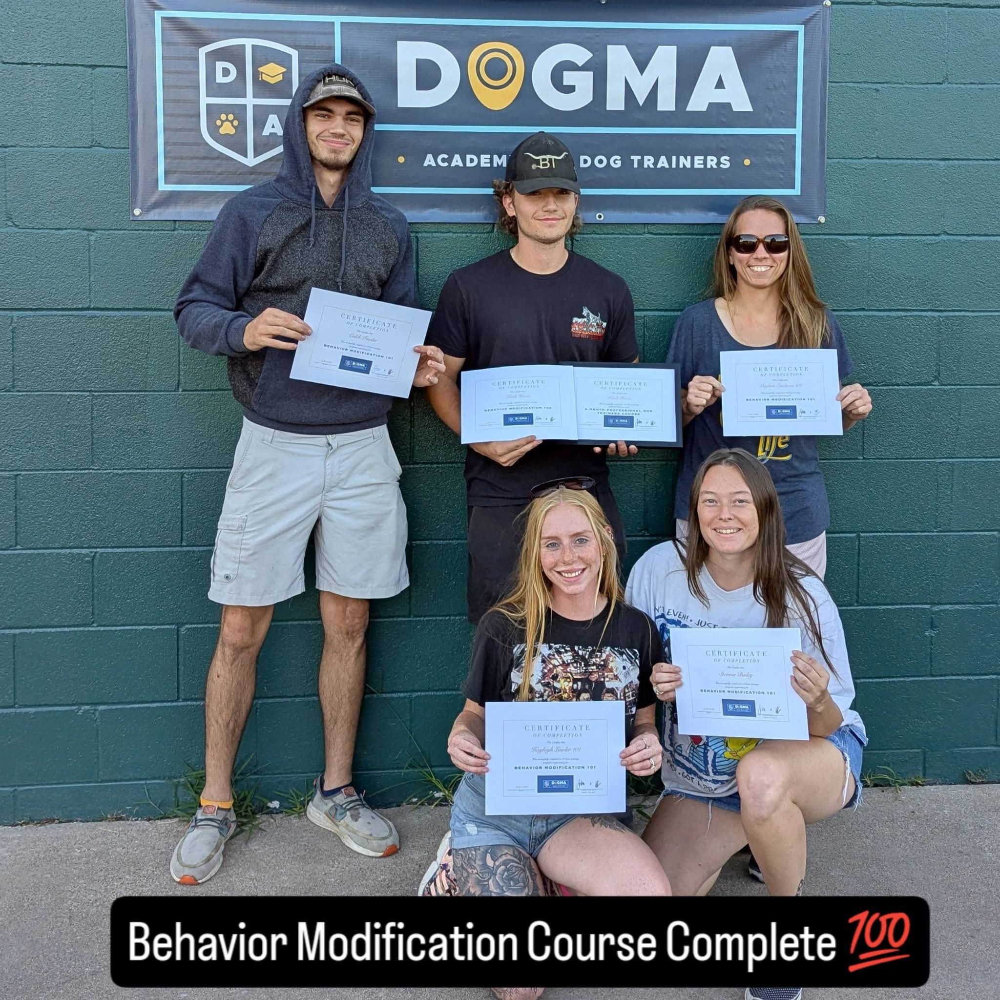
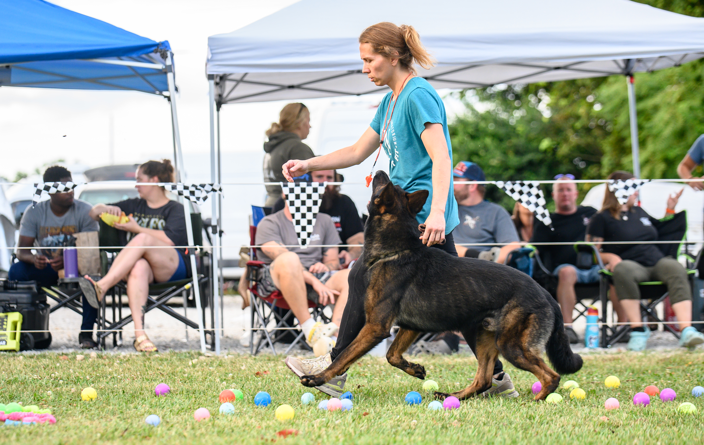
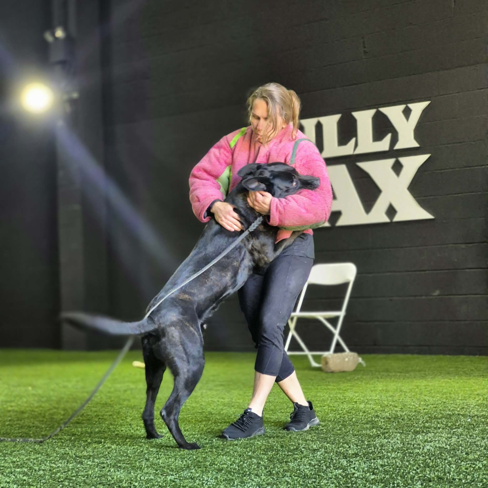
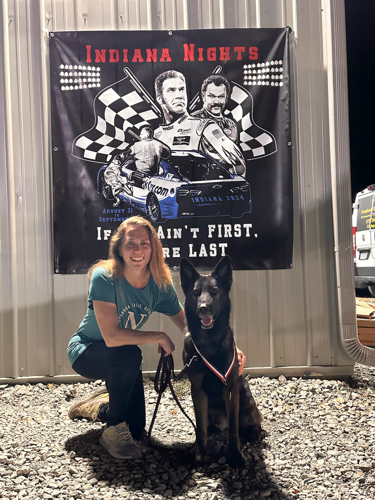
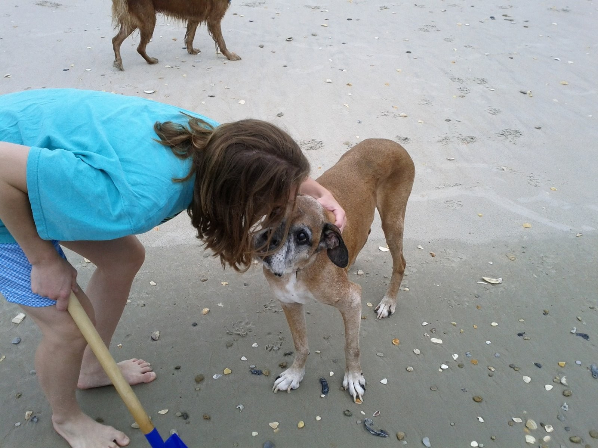
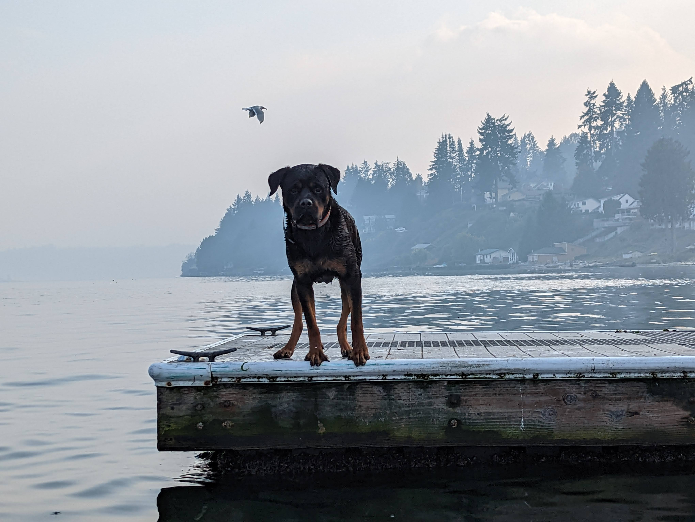
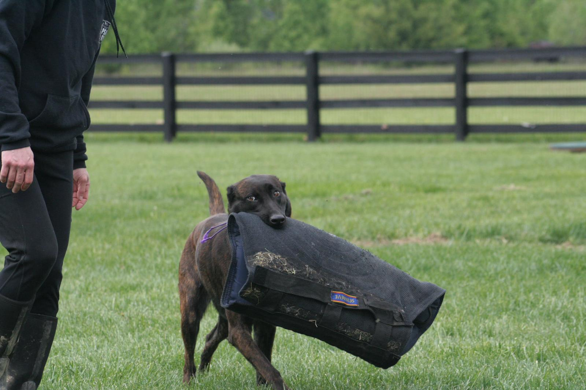
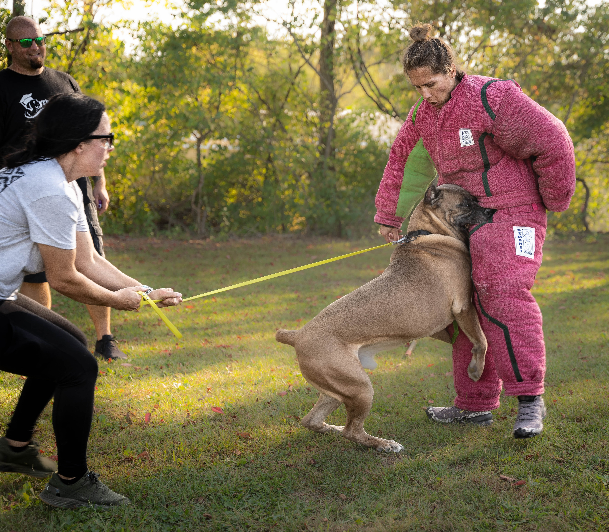

About Crooked River Canine

About Meghan Erickson, Founder
Crooked River Canine is led by Meghan Erickson in Northeast Ohio, shaped by her lifelong love for the outdoors and the Cuyahoga Valley National Park. The name honors the Cuyahoga River, known as the “crooked river” for its winding course through the valley.
Meghan's Dog Training Background
Since 2021, Meghan has trained and competed in PSA (Protection Sports Association) with her personal dogs. She has been a member of several highly successful dog clubs, where she has mentored under some of the top professionals in the country. These clubs include the Cutting Edge Working Dog Club in Mooresville Indiana, Sunday Club in Columbus, Ohio, and UTang PSA Club in Salt Lake City, Utah.
Below are some of Meghan's accomplishments and seminars she has attended:
- Dogma Academy for Dog Trainers - Modification Course & Certification under head instructor Jonathan Katz. (2025)
- PSA Level 1 Title - earned with her personal dog, Hudson. (2024)
- Mike Diehl Seminar - (2025)
- Josh Kirby Decoy Seminar - 2024
- Cameron James Decoy Seminar - 2023
- Deadpool Decoy Seminar - 2022
- Clovr Street Decoy Seminar: Police K9s - 2022
- Jonathan Katz Seminar - 2021
Meghan's Other Accomplishments
Prior to founding her business, Meghan worked as a software engineering leader at companies such as Nike and Backcountry.com, where she focused on e-commerce and data privacy. She also managed systems and network security for the Department of Defense - Military Counterintelligence , where she held a Top Secret Security Clearance as a civilian contractor for many years.
In a previous life, Meghan was also a competitive ice hockey player, traveling across the United States and Canada to compete at the AAA level. She also played NCAA ice hockey at the Rochester Institute of Technology where she earned a scholarship.
Gallery









Contact
Ready to learn more? Reach out to discuss the best training plan for your dog.
Ready to get started? All programs begin with free evaluation.
crookedriverk9@gmail.com (216) 626-5188